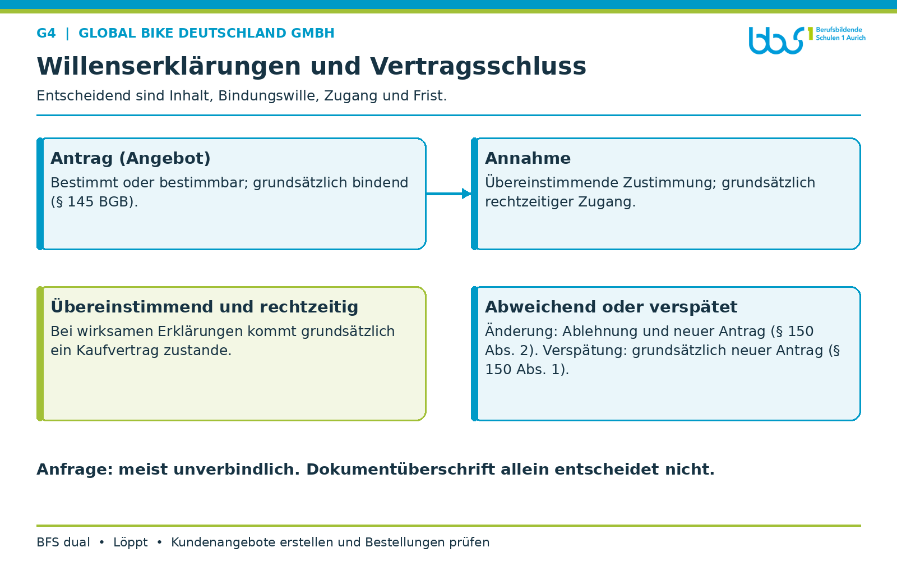

LS 2.4 · Global Bike
M3 – Willenserklärungen, Angebot und Annahme
Global Bike Deutschland GmbH | Fachinformation | ab Phase 1 | bedarfsorientiert nutzbar
1. Worum geht es?
In der Auftragsbearbeitung gehen täglich Anfragen, Bestellungen und Nachrichten von Geschäftspartnern ein. Nicht jede Nachricht verpflichtet Global Bike bereits zur Lieferung. Wer eine Nachricht bearbeitet, muss deshalb unterscheiden, ob ein Kunde lediglich Informationen benötigt, einen verbindlichen Antrag stellt oder einem bestehenden Angebot zustimmt. Diese Unterscheidung schützt beide Geschäftspartner vor Missverständnissen und ungeprüften Zusagen.
Die folgenden Mini-Fälle sind eigenständige Unterrichtssimulationen. Produktbezeichnungen und Beispielbedingungen dienen ausschließlich der Erklärung; sie stellen keine neuen SAP-Stammdaten oder betrieblichen Freigaben dar.
2. Was ist eine Willenserklärung?
Eine Willenserklärung ist eine Äußerung, die auf eine Rechtsfolge gerichtet ist. Wer beispielsweise verbindlich eine Ware kaufen möchte und dies gegenüber dem Verkäufer erklärt, will eine rechtliche Bindung herbeiführen. Nicht jede Äußerung im Geschäftsverkehr ist deshalb eine Willenserklärung.
| Form | Erläuterung | Beispiel |
|---|---|---|
| Schriftlich | Der Wille wird schriftlich ausgedrückt (alltagssprachlich; keine Aussage über gesetzliche Schriftform). | Ein Händler sendet eine verbindliche Bestellung per E-Mail. |
| Mündlich | Der Wille wird ausgesprochen. | Ein Händler nimmt telefonisch ein konkretes Angebot sofort unverändert an. |
| Durch schlüssiges Verhalten | Das Verhalten lässt im Zusammenhang einen Rechtsfolgewillen erkennen. | Global Bike führt einen wirksamen Kundenantrag durch Versand aus, wenn nach den Umständen diese Handlung als Annahme genügt. |
Schweigen ist grundsätzlich keine Annahme. Besondere gesetzliche oder kaufmännische Ausnahmen werden hier nicht vertieft. Auch eine interne Notiz, die noch nicht gegenüber dem Geschäftspartner erklärt wurde, ist nicht allein deshalb ein wirksamer Antrag.
Merke: Entscheidend ist nicht das Medium, sondern der erkennbare Wille, eine Rechtsfolge herbeizuführen.
3. Anfrage, Angebot, Bestellung und Auftragsbestätigung
| Dokument | Bedeutung im betrieblichen Regelfall |
|---|---|
| Anfrage | Unverbindliche Informationsbeschaffung |
| Angebot | Verbindlicher Antrag oder unverbindliche Aufforderung zur Bestellung, abhängig vom Inhalt |
| Bestellung | Annahme eines passenden verbindlichen Angebots oder eigener Antrag |
| Auftragsbestätigung | Annahme eines Antrags oder Dokumentation eines bereits bestehenden Vertrags |
Ein Antrag (auch Angebot genannt) muss so bestimmt sein, dass der Empfänger grundsätzlich durch ein einfaches Ja den Vertrag schließen kann. Beim Kauf müssen insbesondere Vertragspartner, Ware und Preis bestimmt oder bestimmbar sein. Auch Menge und vereinbarte Konditionen sind zu beachten.
Eine Annahme ist die Zustimmung zu einem Antrag. Sie muss grundsätzlich inhaltlich mit diesem übereinstimmen und rechtzeitig wirksam werden.
Mini-Fall: Informationsbedarf. Ein Händler schreibt an Global Bike: „Welche Fahrradpumpen können Sie derzeit anbieten?“ Er nennt noch keine verbindliche Kaufabsicht. Die Nachricht dient der Informationsbeschaffung. Ein Kaufvertrag entsteht nicht.
Mini-Fall: unverbindliche Preisinformation. Global Bike teilt einem Händler ausdrücklich unverbindliche Preise für Zubehör mit. Der Händler bestellt anschließend verbindlich zu bestimmten Bedingungen. Die Bestellung kann nun selbst der Antrag sein. Eine wirksame Annahme durch Global Bike ist noch erforderlich.
4. Bindung an einen Antrag
Nach § 145 BGB ist der Antragende grundsätzlich an seinen Antrag gebunden, sofern er die Bindung nicht ausgeschlossen hat. Das bedeutet: Der Empfänger kann den Antrag innerhalb der maßgeblichen Frist durch eine passende Annahme zum Vertrag werden lassen. Ein Antrag ist nicht mit einem bereits geschlossenen Vertrag gleichzusetzen.
Freizeichnungsklauseln können die Bindung ausschließen. Formulierungen wie „unverbindlich“ oder „freibleibend“ sind deshalb wichtige Hinweise. Der gesamte Wortlaut und der Zusammenhang müssen betrachtet werden.
5. Zugang und Annahmefrist
Bei empfangsbedürftigen Willenserklärungen gegenüber Abwesenden kommt es grundsätzlich auf den Zugang an (§ 130 Abs. 1 BGB). Zugang liegt vor, wenn die Erklärung in den Empfangsbereich gelangt und unter gewöhnlichen Umständen mit der Möglichkeit der Kenntnisnahme zu rechnen ist. Tatsächliches Lesen ist nicht zwingend erforderlich. Ein vorher oder gleichzeitig zugehender Widerruf verhindert die Wirksamkeit.
| Vorschrift | Bedeutung |
|---|---|
| § 146 BGB | Ablehnung oder nicht rechtzeitige Annahme lässt den Antrag erlöschen. |
| § 147 BGB | Ohne festgelegte Frist: im unmittelbaren Gespräch grundsätzlich sofort; gegenüber Abwesenden innerhalb der gewöhnlich zu erwartenden Antwortzeit. |
| § 148 BGB | Bei festgelegter Annahmefrist muss die Annahme innerhalb dieser Frist erfolgen. |
| § 150 Abs. 1 BGB | Verspätete Annahme gilt grundsätzlich als neuer Antrag. |
| § 150 Abs. 2 BGB | Annahme mit Änderungen gilt als Ablehnung verbunden mit einem neuen Antrag. |
Mini-Fall: Frist. Global Bike bietet einem Händler verbindlich Zubehör an. Die Annahme muss bis Freitag eingehen. Der Händler sendet seine Zustimmung am Donnerstag; sie geht erst am folgenden Montag zu. Im Regelfall ist sie verspätet und gilt als neuer Antrag. Die Ausnahme nach § 149 BGB bei erkennbar ungewöhnlich verspäteter Übermittlung bleibt zu beachten und wird hier nicht vertieft.
6. Ein vollständiger beispielhafter Schriftwechsel
| Vorgang | Nachricht | Fachliche Einordnung |
|---|---|---|
| 1 | Händler: „Bitte nennen Sie uns Ihre Konditionen für zwölf Fahrradklingeln.“ | Anfrage, noch kein Kaufvertrag |
| 2 | Global Bike: „Wir bieten Ihnen verbindlich zwölf Fahrradklingeln zu insgesamt 96 EUR netto an, zuzüglich Umsatzsteuer. Annahme bis Mittwoch; Lieferung und Zahlung gemäß den beigefügten vereinbarten Bedingungen.“ | Antrag, sofern die Bedingungen vollständig bestimmt oder bestimmbar sind |
| 3 | Händler: „Wir nehmen Ihr Angebot unverändert an.“ Die Nachricht geht am Dienstag zu. | Rechtzeitige, übereinstimmende Annahme |
| 4 | Global Bike bestätigt die vereinbarten Inhalte. | Dokumentation des bereits geschlossenen Vertrags |
Unter den genannten Voraussetzungen entsteht der Kaufvertrag bei Schritt 3, nicht erst bei Schritt 4. Alle Beträge und Bedingungen sind rein didaktisch.
7. Wenn die Erklärungen nicht übereinstimmen
Eine verbindlich verlangte Änderung ist keine unveränderte Annahme. Nach § 150 Abs. 2 BGB wird der ursprüngliche Antrag abgelehnt und ein neuer Antrag gestellt. Eine bloße Rückfrage ist dagegen nicht automatisch eine Ablehnung. Der Unterschied liegt im erkennbaren Erklärungswillen.
Beispiel: Ein Händler fragt nach einer anderen Verpackung, ohne bereits eine Bestellung zu erklären. Das kann eine unverbindliche Rückfrage sein. Erklärt er dagegen, ausschließlich zu einer geänderten Verpackungsbedingung verbindlich bestellen zu wollen, liegt bei einem zuvor verbindlichen Angebot grundsätzlich ein neuer Antrag vor. Die weitere betriebliche Prüfung erläutert M7.
8. Handlungshilfe: rechtliche Prüfung
- Nachrichten in zeitlicher Reihenfolge betrachten.
- Absender, Empfänger und Inhalt feststellen.
- Prüfen, ob eine rechtliche Bindung gewollt ist.
- Antrag und mögliche Annahme identifizieren.
- Inhaltliche Übereinstimmung prüfen.
- Zugang und maßgebliche Annahmefrist prüfen.
- Ergebnis begründen: Vertrag geschlossen, noch offen oder Antrag erloschen bzw. neuer Antrag.
Erst wenn ein wirksamer Kaufvertrag vorliegt, entstehen die kaufvertraglichen Hauptpflichten nach § 433 BGB (M8).
9. Typische Fehler
| Fehlvorstellung | Fachlich richtig |
|---|---|
| Jede Bestellung schließt einen Vertrag. | Sie kann auch erst einen Antrag darstellen. |
| Ein Angebot ist bereits ein Vertrag. | Eine wirksame Annahme ist grundsätzlich erforderlich. |
| Absenden genügt zur Fristwahrung. | Grundsätzlich zählt der rechtzeitige Zugang. |
| Schweigen bedeutet Zustimmung. | Grundsätzlich nicht. |
| Eine Auftragsbestätigung ist immer erforderlich. | Ein Vertrag kann bereits vorher geschlossen sein. |
| Jede Rückfrage ist eine Ablehnung. | Wortlaut und Zusammenhang sind entscheidend. |
10. Schaubild und Merksätze
Schaubild G4: Willenserklärungen und Vertragsschluss (in Moodle hier einbetten).
Merke: Zwei wirksame, übereinstimmende Willenserklärungen – Antrag und Annahme – begründen grundsätzlich den Kaufvertrag. Dokumentüberschriften allein entscheiden nicht. Zugang, Frist und Inhalt sind gemeinsam zu prüfen.
Freiwillige Vertiefung: M9, Ü1 und Ü2; für abweichende Bestellungen M7 und Ü5.
Gesetzesgrundlagen
§ 130 BGB, §§ 145–151 BGB, § 433 BGB. Didaktische Erläuterungen zum Regelfall; Rechts- und Geschäftsfähigkeit als Vorwissen. Sonderfälle nach §§ 149 und 151 BGB werden nicht vertieft. Die Rechtsgrundlagen wurden aus der bisherigen Fassung übernommen, nicht erneut online geprüft.
